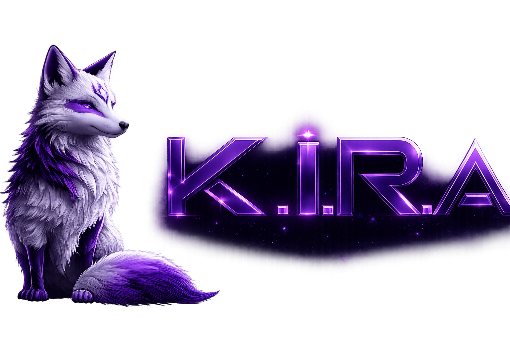

SISTEMA DE ASSISTÊNCIA INTELIGENTE
KIRA
Voz · LiveKitverificando
Cérebro · Geminiverificando
WhatsAppverificando
Verificando token...
A conexão de voz será encerrada, mas seu histórico continuará salvo.
